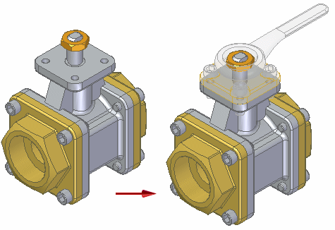
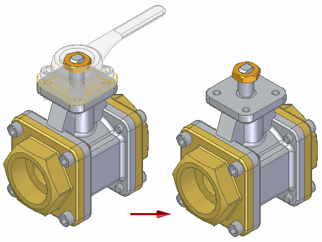
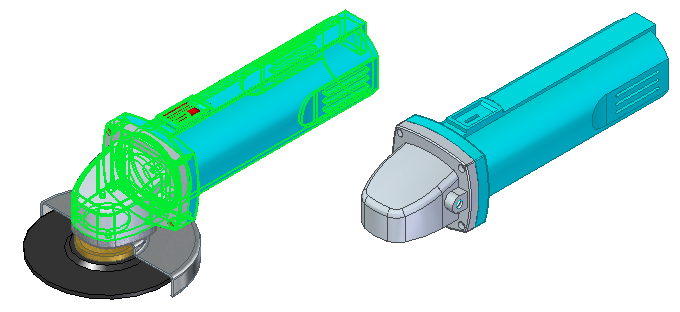
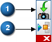
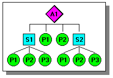
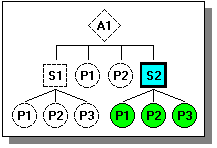
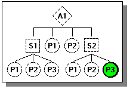

Displaying parts in assemblies
When you work with complex or unfamiliar assemblies, it is often useful to change the display of the parts and subassemblies. Solid Edge makes it easy to hide and display the components in your assembly so you can work more efficiently.
Displaying and hiding assembly components
The display commands in the Assembly environment are especially useful when you work with large assemblies. For example, you may want to hide most of the parts in an assembly to make it easier to place a new part. You can select the parts to display using the PathFinder tab, then use the Show Only command to hide all other parts.
For more information, see the Working with large assemblies efficiently Help topic.
When you hide parts or subassemblies in the active assembly, the symbols in PathFinder change to indicate that the components are hidden.
Ghosting parts
Use the Toggle Display button on the Status bar to change the display of hidden parts to transparent, but visible. When you turn ghost mode on, all hidden parts display as translucent.

In the graphic window, click the Toggle Display button to change the display of ghosted parts back to hidden.

Isolating parts
You can use the Isolate command to only display the selected parts. Select the parts to isolate and then choose the Isolate command on the shortcut menu.

In the graphic window, click the Restore button (1) to return to the pre-isolate view or click the Dismiss button (2) to keep the isolated view.

Saving and applying display configurations
After you hide parts or subassemblies, you can save the display configuration with the Display Configuration command. You can quickly apply a saved configuration to a view using the Configuration List on the Home tab in the Configurations group. Avoid using special characters in configuration names. For example, special characters such as \ / : ! are not allowed.
For more information, see the Using display configurations Help topic.
Using zones
You can also use zones to show, hide, and select assembly components, such as parts, assemblies, layouts, weld beads, and reference planes.
For more information, see the Using zones in assemblies Help topic.
Comparing display configurations and zones
Both Display Configurations and Zones are useful tools to manage component display in assemblies. The following information compares and contrasts Display Configurations and zones.
Display configurations
-
A Display Configuration allows you to control the display status of assembly components regardless of the components physical location in the design space.
If you add components to the assembly, they are not added to an existing Display Configuration. You must apply the configuration, display the components you want to add to the configuration, then resave the configuration. When working in large, nested assemblies, shared by multiple users, it can sometimes be difficult to keep track of efficiently.
When working with a Family of Assemblies, you can create member-specific Display Configurations.
Zones
-
A Zone allows you to show, hide, and select assembly components based on a rectangular volume of space you define when you create the Zone. As you add new components to the assembly, they are automatically added to any existing zones they fall within.
You can edit the physical size of a zone later to include or exclude components.
When working with a family of assemblies, the zones functionality is not available.
Part display and system performance
When you work with large assemblies, you can improve system performance by hiding parts and subassemblies you are not using. For example, display commands such as Zoom, Zoom Area, and Pan work faster if you hide parts. Assembly documents also open faster if parts have been hidden.
You can improve performance by using the Unload Hidden Parts command to unload the hidden parts from memory.
Displaying and hiding parts during editing
When you in-place activate a part or subassembly to make changes, the remaining parts and subassemblies are still displayed, but they change color to make it easier to focus on the part you are editing. You can use the Hide Previous Level command on the View tab to hide other parts and subassemblies while you edit the part.
For example, suppose you are working in assembly A1 and need to make changes in subassembly S2.

You can select subassembly S2 in PathFinder, then click the Edit command on the shortcut menu to in-place activate subassembly S2. In subassembly S2, you can still see all the parts and subassemblies, but the parts and subassemblies that are not in subassembly S2 are dimmed.
You can use the Hide Previous Level command on the View tab to hide the other parts and subassemblies as shown below.

If you then in-place activate part P3 in subassembly S2, you also can hide the remaining parts in subassembly S2 using the Hide Previous Level command. The result would be similar to the following illustration.

To redisplay the hidden parts, select the Hide Previous Level command again.
Displaying and hiding specific geometry for assembly components
You can also control the display of a selected part or subassembly's reference planes, sketches, coordinate systems, reference axes, construction surfaces, and construction curves. You can use the Show/Hide Component commands on the shortcut menu to display and hide these element types for one or more selected parts. For example, you can select a part, then on the shortcut menu, point to Show/Hide Component, then click Construction Surfaces to display or hide all the construction surfaces for a part. A checkmark is displayed adjacent to the command name when a component is displayed. You can also display an assembly component based on how it was saved using the As Last Saved command on the Show/Hide Component shortcut menu.
Similarly, when nothing is selected you can also hide the reference planes, sketches, reference axes, construction surfaces, or construction curves for all the parts in an assembly using the commands on the Hide All shortcut menu. For example, to hide the sketches for all parts in the assembly, on the shortcut menu point to Hide All, then click Sketches.
When you display or hide reference planes, sketches, coordinate systems, reference axes, construction surfaces, and construction curves for a part or subassembly, the current display status for these element types is not captured in a saved Display Configuration.
You can also control the display of part geometry while you place a part or edit its position in the assembly. The Construction Display option on the Assemble command bar allows you to display and hide reference planes, coordinate systems, and so forth for the placement part or the target part.
How do I
Find a part in an assemblyDefine a zone in an assembly
Isolate parts
Display or hide all reference elements in an assembly
Display or hide specific reference elements in an assembly
Learn more
Managing components in assembliesLook up more details
Select Tools pageQuery Dialog Box (Assembly)
Query Scope Dialog Box